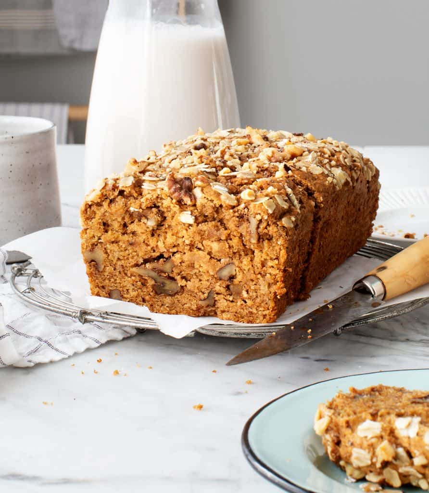

Banana Bread

Banana bread is a delicious and energy restoring pleasure that functions perfectly for a snack or
dessert. A small investment of time, to produce this fine delicacy is truly wonderful.. and tasty!
Ingredients
- 2 very ripe bananas, mashed (1 cup)
- ½ cup coconut sugar, or regular sugar
- ¾ cup almond milk, or any milk
- ⅓ cup extra-virgin olive oil, more for brushing
- 1 teaspoon vanilla extract
- 1 teaspoon apple cider vinegar
- 1½ cups whole wheat pastry flour
- ½ cup almond flour
- 2 teaspoons baking powder
- ¼ teaspoon baking soda
- ½ teaspoon sea salt
- ½ teaspoon cinnamon
- ¼ teaspoon nutmeg
- ½ cup chopped walnuts
Topping
- 2 tablespoons chopped walnuts
- 1 1/2 tablespoon rolled oats
Steps
- Preheat the oven to 350°F and brush a 9x5-inch loaf pan with a bit of olive oil.
- In a large bowl, combine the mashed bananas with the sugar, almond milk, olive oil, vanilla, and apple cider
vinegar and whisk until combined.
- In a medium bowl combine the flours, baking powder, baking soda, salt, cinnamon, and nutmeg.
- Add the dry ingredients to the bowl with the wet ingredients and stir until just combined, then fold in the
walnuts. Pour into the prepared pan and sprinkle with the chopped walnuts and oats.
- Bake for 42 to 50 minutes, or until a toothpick inserted in the middle comes out clean.